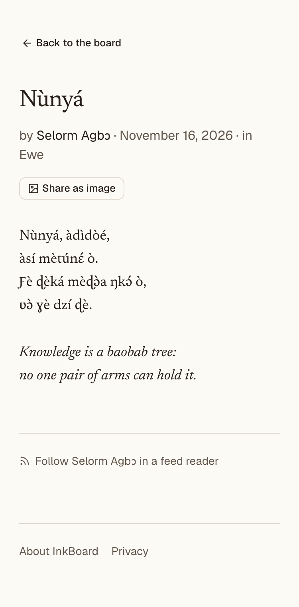
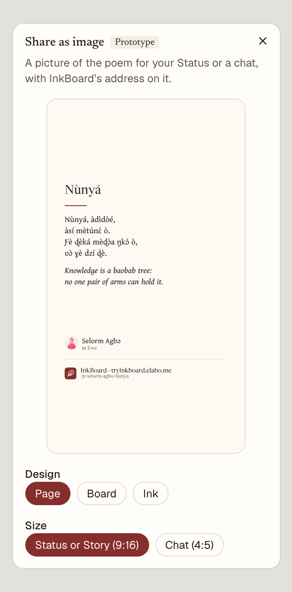
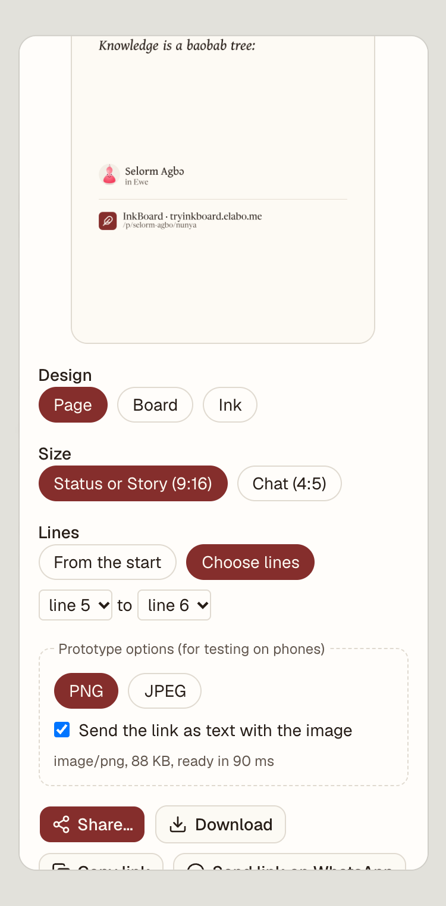
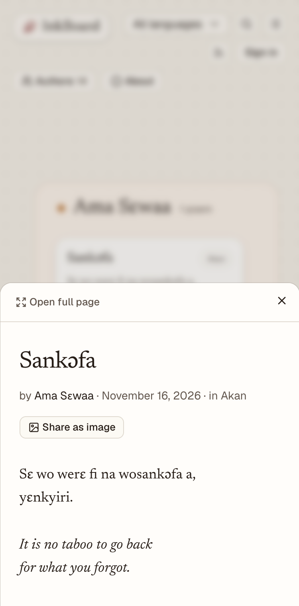
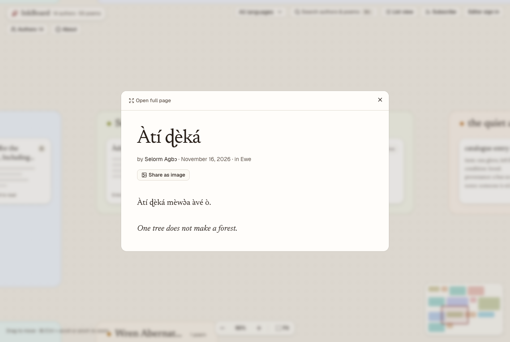
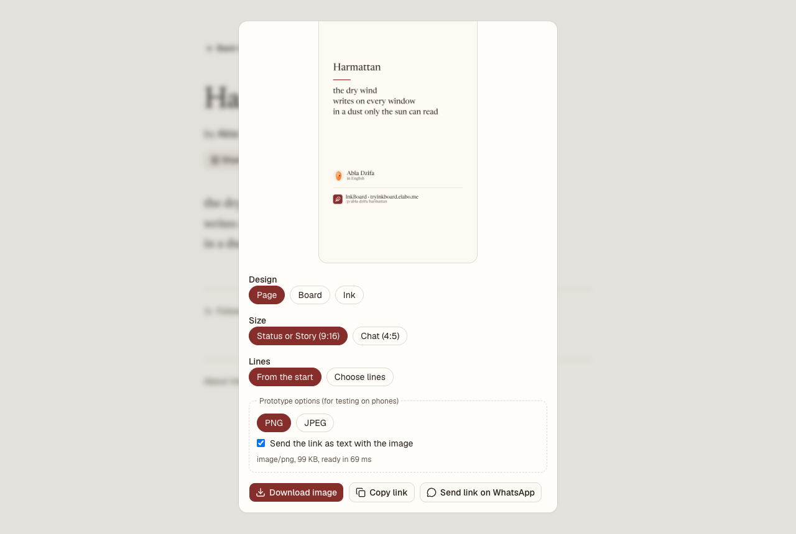
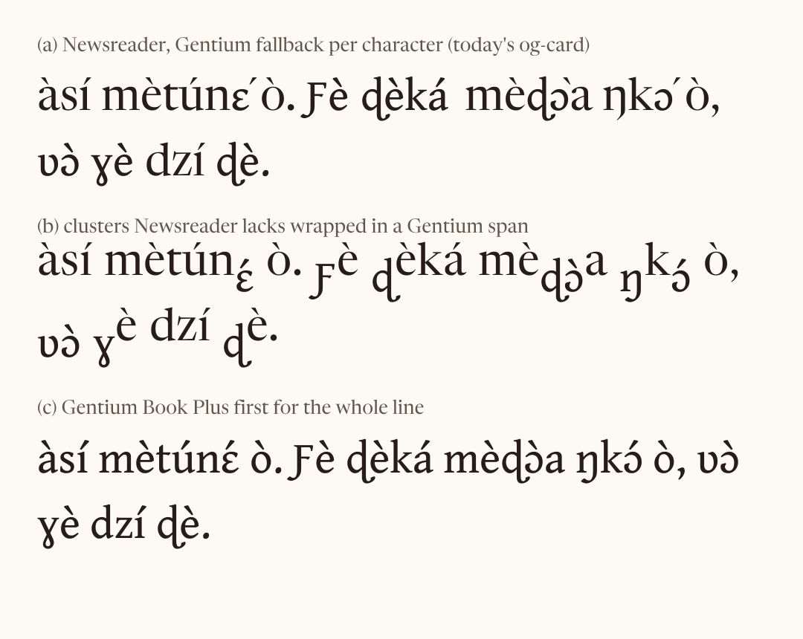
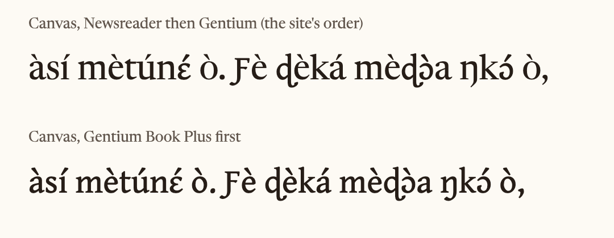
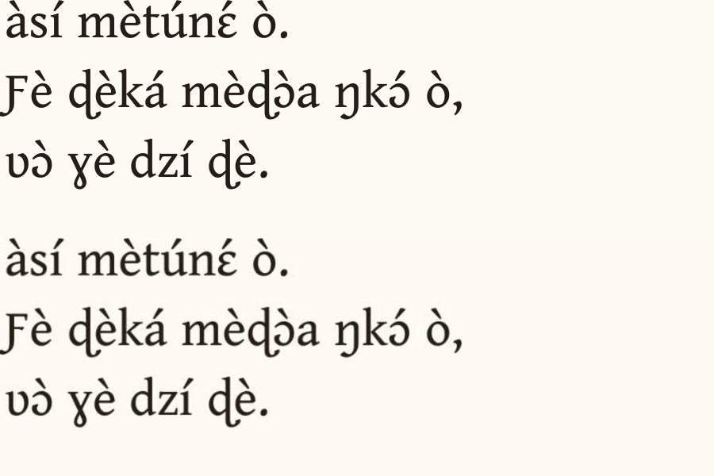

InkBoard · research, designs and a prototype · 16 November 2026
Share a poem as an image
A “Share as image” button makes a portrait picture of a poem (its lines, title, author and InkBoard’s address) for a WhatsApp Status or a chat, and later Instagram Stories. Every picture on this page is a real render from a throwaway prototype, from fictional demo poems.
Recommendation
- Make the picture on the server, as a PNG, the way InkBoard already makes link previews: about 30–60 ms and 90–180 KB per picture, the same for everyone, cached per poem and refreshed when it’s edited.
- The “Page” design for the first version: calm, the most readable at Status size, the cheapest to make. “Ink” could follow as a dark option.
- Two sizes: 9:16 for Status and Stories, and 4:5 for chats, where a tall picture is shrunk or cropped.
- The poem’s address printed on the picture, and the link sent as text with it. Whether a link in a Status caption can be tapped isn’t documented, and reports disagree; the printed address always works.
- Ready before the tap: the picture is made when the share sheet opens, so the Share button can hand it to the phone at once (phones allow 5 seconds after a tap; on slow 3G, making it took 3.6 s).
- Public poems only. Private poems get no picture, so their text can never appear on one.
- One fix first, in what’s live today: link previews of poems with Ewe tone marks on ɛ and ɔ put the accent beside the letter. The same font-order fix used here solves it.
Your choices
Each has a recommendation; the plan below assumes it unless you choose otherwise.
1. Design
Page, Board or Ink, or Page with Ink as a dark option. Page
Board is the most “InkBoard”, but its card leaves less room for the poem and takes about ten times longer to make.
2. Which lines
The whole poem when it fits, else from the start to a stanza break with “Read the whole poem on InkBoard”. Readers choosing lines (like song lyrics): in the first version, or later? Later (phase 2)
3. The address on the picture
The full address (today’s: tryinkboard.elabo.me/p/abla-dzifa/instructions-for-the-house-sitter), or a short link like tryinkboard.elabo.me/s/k3x9q, easier to type from a Status. Short link, phase 3
4. Link as text with the picture
Send “Title” by Author, on InkBoard: link with the picture (a caption on Android), or the picture alone. iPhones may drop one of the two: to be tested. With the link
5. Private poems
No picture, or a title-only “password protected” card. No picture
A teaser invites people to ask for the password in public; the link’s preview already shows only the title.
6. Where writers find it
Besides the poem page and the board’s overlay: after publishing (“Poem published”), a poem’s row menu on the dashboard, the welcome checklist’s share step. All three, phase 2
7. QR code on the picture
Some Android phones can scan a code on their own screen; many people won’t know how. It takes room. Not now
8. Chat size (4:5)
In the first version, or the second? Phase 2
Plan
| Phase | What | Effort |
|---|---|---|
| 0 | Fix tone marks in today’s link previews | ½ day |
| 1 | Share as image for public poems: Page design, 9:16, cached; poem page and overlay; preview sheet with Share, Download, Copy link, WhatsApp link; tests | 2–3 days |
| 2 | 4:5 chat size, choosing lines, writers’ entry points, bold type | 2 days |
| 3 | Short links on the picture (with a visit count), Instagram Stories check, a second design | 1–2 days |
The designs
Three directions, all paper and ink. Everything important stays inside the area WhatsApp and Instagram leave clear (see the next section). Each picture links to the full 1080×1920 PNG; under it, its size and how long the server took to make it.
- Page: a page from a book of poems. Title, a short red rule, the poem; the writer and InkBoard’s address at the foot.
- Board: the poem as a card on InkBoard’s dotted board, like the cards on the site.
- Ink: dark ink with paper-coloured, centred lines. Striking among photos, best for short poems.
The Ewe lines are the demo proverbs with tone marks added to test the rendering; they aren’t checked Ewe. The long English poem and its title are written for the test.
Ewe, with tone marks (ɛ́ ɔ̀ ƒ ɣ ʋ ŋ)


Ewe, a short proverb


Twi


Ga


English, short


English, long poem, long title


4:5 for chats
1080×1350. Fills a chat bubble; the Status version is shrunk or cropped there (next section).


Lines a reader picks
Lines 5–7 of the long poem, headed “Lines from” and the title.


In a viewer and a chat
Simplified, unbranded frames: grey shapes where an app’s own controls sit. The sizes are the cautious end of what guides report; WhatsApp and Instagram don’t publish them for ordinary posts.
Full screen in a Status viewer
Full screen in a Story viewer
Sent to a chat
How WhatsApp shows a tall picture in a chat isn’t documented: guides say it’s shrunk or cropped toward 4:5 or square. Both cases, and the 4:5 version, with the link sent as text underneath.
“Nùnyá” by Selorm Agbɔ, on InkBoard: tryinkboard.elabo.me/p/selorm-agbo/nunya
“Nùnyá” by Selorm Agbɔ, on InkBoard: tryinkboard.elabo.me/p/selorm-agbo/nunya
“Nùnyá” by Selorm Agbɔ, on InkBoard: tryinkboard.elabo.me/p/selorm-agbo/nunya
The flow
Screenshots of the prototype (its sheet has extra “prototype options” for testing on phones; the real one would be shorter).






Also recommended for writers (phase 2)
- Right after publishing: “Poem published” on the dashboard gets a “Share as image” action, the moment a writer most wants to tell people.
- A poem’s row menu on the dashboard (next to View, Edit, Pin).
- The welcome checklist’s share step (today: share the author page’s link) offers the picture of their first poem too.
Evidence from the prototype
The shared file
Playwright, with the phone’s share sheet stubbed to capture what navigator.share() receives:
{"name":"inkboard-nunya.png","type":"image/png","size":117745,"width":1080,"height":1920,
"text":"“Nùnyá” by Selorm Agbɔ, on InkBoard: https://tryinkboard.elabo.me/p/selorm-agbo/nunya",
"active":true,"msAfterClick":0}
chat size + JPEG + chosen lines + no text:
{"name":"inkboard-instructions-for-the-house-sitter.jpg","type":"image/jpeg","size":118506,
"width":1080,"height":1350,"text":null,"active":true,"msAfterClick":0}
active: the tap’s user activation was still live at the call; msAfterClick: nothing waited before it. Also checked: the overlay shares the same way; a desktop with no share sheet gets Download (file inkboard-harmattan.png), Copy link and the WhatsApp link; a private poem has no button and its picture is refused (403).
How long the file takes to be ready
| Network (emulated) | Tap to ready |
|---|---|
| This computer (localhost) | 0.06–0.12 s |
| 3G (1.5 Mbps, 150 ms) | 0.8 s |
| Slow 3G (400 kbps, 400 ms) | 3.6 s |
Phones allow 5 seconds after a tap. Making the file inside the Share tap would fail on slow connections; making it when the sheet opens doesn’t.
Sizes and render times
Production build on a Mac, one request at a time, 30 pictures. JPEG sizes are what a phone’s browser makes from the PNG; “WhatsApp-like” is a re-encode at 1600 px and quality 0.7, the figures guides report for WhatsApp chats.
| Design | Size | Pictures | Server render | PNG KB | JPEG 0.9 KB | JPEG 0.8 KB | WhatsApp-like KB |
|---|---|---|---|---|---|---|---|
| Page | 9:16 | 6 | 32–56 ms | 94–182 | 58–171 | 48–135 | 31–84 |
| Page | 4:5 | 3 | 28–53 ms | 88–169 | 69–169 | 56–132 | 48–113 |
| Board | 9:16 | 6 | 451–503 ms | 100–160 | 63–139 | 50–108 | 32–68 |
| Board | 4:5 | 3 | 376–393 ms | 94–148 | 75–136 | 58–105 | 49–88 |
| Ink | 9:16 | 6 | 32–55 ms | 94–180 | 56–166 | 45–130 | 31–82 |
| Ink | 4:5 | 3 | 29–52 ms | 88–168 | 66–165 | 53–129 | 46–109 |
PNG wins: the flat paper colours keep it small, JPEG is hardly smaller for text and softer, and WhatsApp re-encodes either way. Board is slow because of its dotted background and shadow (not profiled).
Tone marks
The server’s text engine places marks only by the font’s defaults. When ɛ comes from one font and its accent from another, the accent lands beside it (top). Setting Ghanaian text in Gentium Book Plus first fixes it (bottom), and the prototype does that. The browser (right) gets it right either way.



Research in short
Full version with sources and dates: docs/research/share-image.md.
- Status: WhatsApp documents only a minimum (720×1280); 1080×1920 is the convention. Status pictures are compressed and HD doesn’t apply to Status. Its controls cover roughly the top 250 px and bottom 250–400 px (guides disagree).
- Stories: Instagram recommends 9:16; only ad safe zones are published (top 14%, bottom 20% or 35% depending on the source). From the web, there’s no direct way into Stories: the share sheet or the gallery.
- Chats: tall pictures are shrunk or cropped; 4:5 or square fill the bubble (guides; undocumented).
- Sharing files from the web: Chrome, Samsung Internet and Opera on Android, Safari from iOS 15, Chrome/Edge on Windows, ChromeOS and Mac. Not Firefox, and not in-app browsers built on Android WebView. PNG and JPEG are allowed. One tap allows one share, within 5 seconds.
- Text with the file: Android sends it with the picture; whether WhatsApp keeps it as a caption, and what iPhone WhatsApp does with both, isn’t documented (reports disagree). Test on phones.
- Back to the poem: a link in a text Status gets a preview; a link in a picture’s caption may not be tappable (unclear). Print the address; consider a short link.
- Rendering: the server’s text engine (Satori 0.29) has no kerning or mark positioning, hence the Gentium-first rule; the browser’s canvas shapes text properly but needs hand-made line breaks, font loading and more code on every phone.
- Not verified here: anything on a real phone (the share sheet was stubbed), WhatsApp’s actual compression and overlays, Instagram’s share target. The research doc ends with how to test on an Android phone and an iPhone.